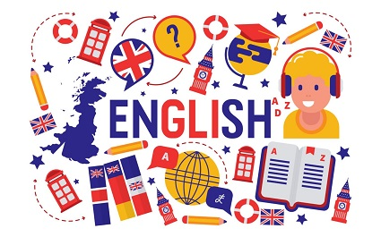

Why is it so important to learn English these days?
Let me give you some ideas that will help you to decide why you need this beautiful language in your life:
1. English is the language of International Communication: If you want to communicate with people from all around the world, you will find out that it's very common that people from these places speak English, even if they are not native speakers. it will be easier to make friends!
2. Getting a better job: English is one of the most spoken language in the world and because of this, it has become the one of science, aviation, computers, diplomacy, and tourism. So, knowing English will increase your chances of getting a good job whether in your own country or abroad.
4. English is the language of the media industry: Remember what I told you before? If you like reading a book, listening your favorite songs, watching films and TV shows, you will enjoy even more these activities with some knowledge of English because it is everywhere that you can imagine.

5. The language of the Internet: English is a particularly important language online with the highest percentage of content on the internet. As well as this, some of the world’s largest tech companies are based in English speaking countries.
6. Traveling abroad: and last but not less important, it will get easier to travel to another country thanks to its international nature, so you will see how people communicate with you even if it’s not the official language in that country.

After all these reasons, aren't you convinced yet? Then you should text me and I will give you one hundred more to start learning English!